Folosirea aplicației Mail
Notă
Aplicația Mail este instalată implicit în Nextcloud Hub, dar poate fi dezactivată. Dacă nu o ai, întreabă administratorul.
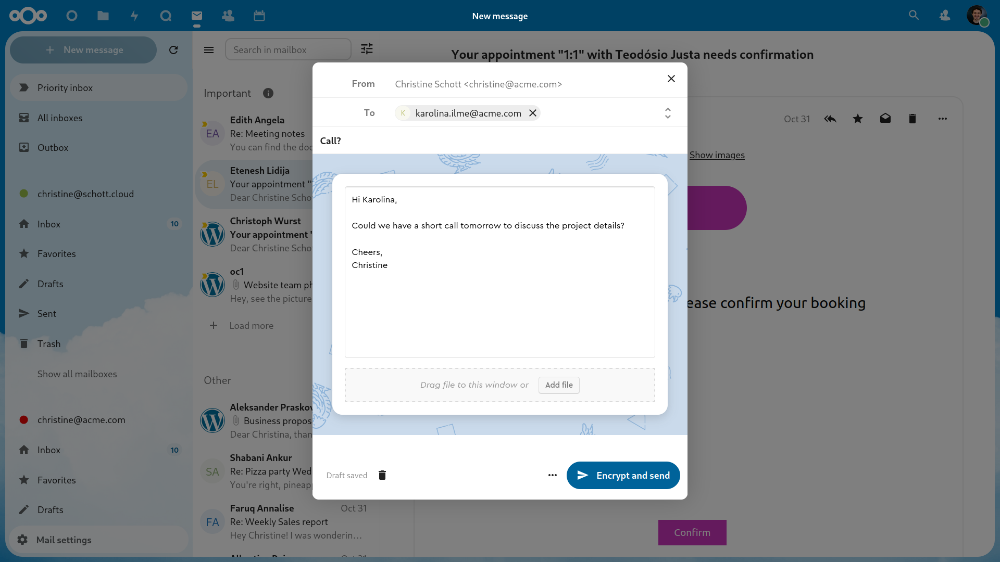
Gestionarea contului de e-mail
Schimbarea aspectului
Added in version 3.6: Nextcloud 26 sau mai nou
Deschide setările Mail
Alege între Listă, Împărțire verticală și Împărțire orizontală
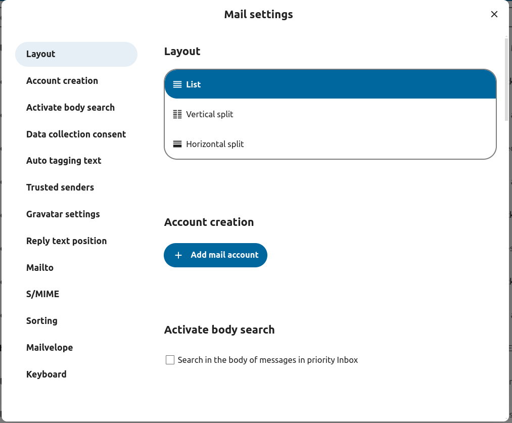
Folosirea modului compact
Added in version 5.7: Nextcloud 32 sau mai nou
Modul compact oferă o modalitate mai curată și mai eficientă de a-ți vedea mesajele. Avatarurile sunt ascunse, casetele de selecție sunt mereu vizibile, iar previzualizarea mesajelor este eliminată. Astfel se economisește spațiu și poți vedea mai multe e-mailuri deodată.
Deschide setările Mail
Mergi la Aspect
Activează sau dezactivează Folosește modul compact
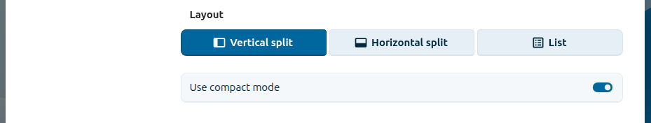
Modul de afișare și de operare a mesajelor
Added in version 5.2: Nextcloud 30 sau mai nou
Mail poate comuta între două moduri diferite de vizualizare și de operare a mesajelor: pe conversații și individual.
În modul pe conversații, mesajele sunt grupate pe conversații. În lista de mesaje a dosarului, mesajele înrudite sunt grupate astfel încât să fie afișat doar cel mai recent, iar după selectarea grupului toate mesajele înrudite apar în panoul de afișare. Este util pentru a urmări discuțiile și a înțelege contextul răspunsurilor. În acest mod, operațiile precum mutarea și ștergerea se aplică întregii conversații: când muți sau ștergi o conversație, sunt afectate toate mesajele din ea.
În modul individual, mesajele sunt afișate separat, atât în lista de mesaje a dosarului, cât și în panoul de afișare, iar operațiile precum mutarea și ștergerea se aplică doar mesajului selectat. Acest mod este util când vrei să gestionezi mesajele separat, fără să afectezi întreaga conversație.
Deschide setările Mail
Alege între Afișează toate mesajele din conversație (pe conversații) și Afișează doar mesajul selectat (individual)
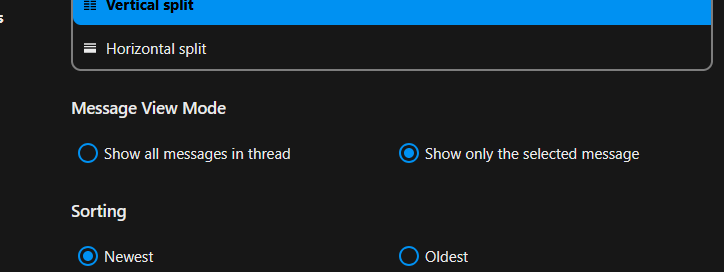
Adăugarea unui cont de e-mail nou
Activează aplicația Mail din pagina de aplicații
Dă clic pe pictograma Mail din antet
Completează formularul de autentificare (automat sau manual)
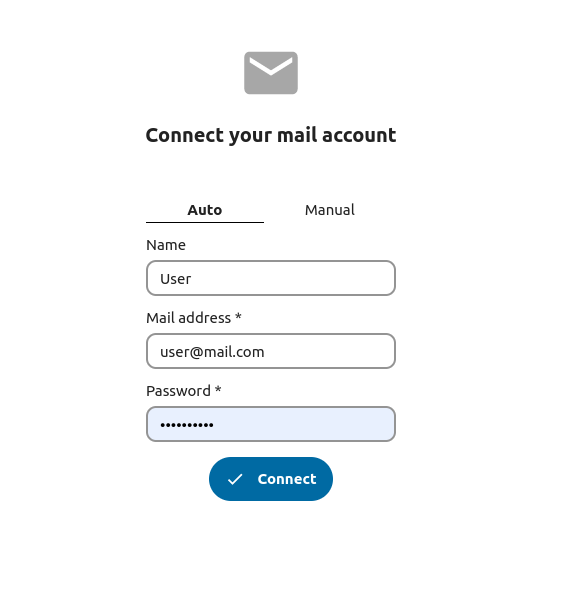
Schimbarea ordinii de sortare
Added in version 3.5: Nextcloud 26 sau mai nou
Deschide setările Mail
Mergi la Sortare
Poți alege Cele mai vechi mai întâi sau Cele mai noi mai întâi
Notă
Această modificare se aplică tuturor conturilor și dosarelor tale
Sortarea favoritelor primele
Added in version 5.7: Nextcloud 31 sau mai nou
Această setare îți permite să afișezi mesajele marcate ca favorite într-o secțiune separată, în partea de sus a listei de mesaje.
Deschide setările Mail
Mergi la Aspect
Activează Sortează favoritele primele
Mesaje programate
Dă clic pe butonul Mesaj nou
Dă clic pe meniul de acțiuni (…) din fereastra editorului
Dă clic pe Trimite mai târziu
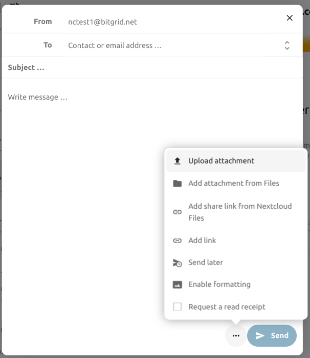
Căsuța de intrare prioritară
Căsuța de intrare prioritară are 2 secțiuni: Important și Altele. Mesajele vor fi marcate automat ca importante în funcție de mesajele cu care ai interacționat sau pe care le-ai marcat ca importante. La început s-ar putea să trebuiască să schimbi manual importanța ca să înveți sistemul, dar acesta se va îmbunătăți în timp.
Clasificarea automată este opțională. O poți refuza la configurarea unui cont. Clasificarea poate fi activată sau dezactivată oricând din setările contului.
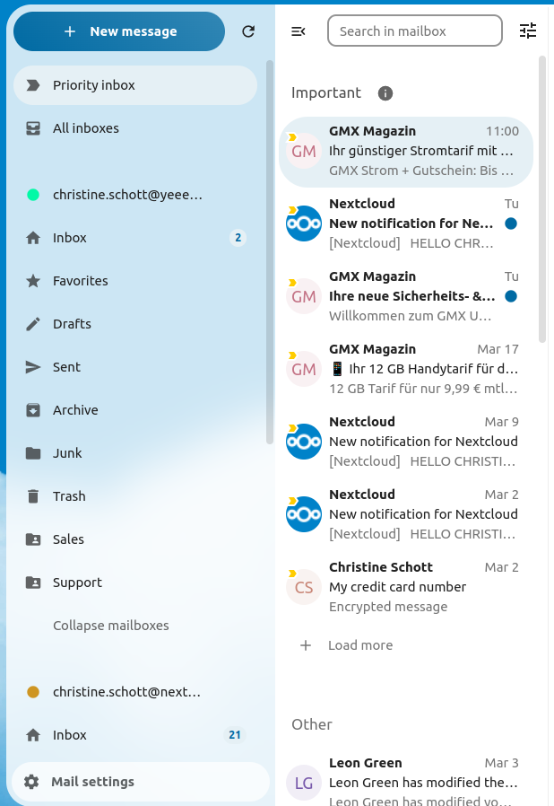
Toate căsuțele de intrare
Aici sunt afișate cronologic toate mesajele din toate conturile în care te-ai autentificat.
Setările contului
Setările contului, cum ar fi:
Aliasuri
Semnătură
Dosare implicite
Răspuns automat
Expeditori de încredere
…și altele
Se găsesc în meniul de acțiuni al unui cont de e-mail. Acolo poți edita, adăuga sau elimina setări, după nevoie.
Mutarea mesajelor în dosarul de spam
Added in version 3.4: Nextcloud 26 sau mai nou
Mail poate muta un mesaj în alt dosar când este marcat ca spam.
Deschide setările contului
Mergi la Dosare implicite
Verifică dacă este selectat un dosar pentru mesajele nesolicitate
Mergi la setările pentru spam
Dă clic pe opțiunea de mutare a mesajelor în dosarul de spam
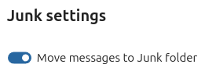
Reîmprospătarea dosarului
Poți porni manual sincronizarea dosarului cu butonul de reîmprospătare din partea de sus a listei de dosare. Începând cu version 5.7, sincronizarea reîmprospătează și lista de dosare a contului selectat.
Căutarea unificată
Aplicația Mail se integrează cu căutarea unificată din Nextcloud (vezi Interfața web Nextcloud pentru detalii). Poți căuta e-mailuri în toate conturile tale din bara de căutare din antetul Nextcloud.
Mail caută în subiectele e-mailurilor și în câmpurile de expeditor/destinatar. Pentru a căuta în conținutul e-mailurilor, folosește căutarea în dosare din aplicație.
Căutarea în dosar
Added in version 2.1: Nextcloud 25 sau mai nou
În partea de sus a listei de mesaje, în orice aspect, există un câmp de căutare rapidă în subiectele e-mailurilor. Începând cu version 3.7, acest câmp îți permite implicit să cauți după subiect, destinatar (către) sau expeditor (de la).
Căutarea avansată în dosar
Added in version 3.4: Nextcloud 26 sau mai nou
Poți accesa căutarea avansată printr-o fereastră care se deschide de la capătul câmpului de căutare rapidă.
Activarea căutării în textul mesajelor
Added in version 3.5: Nextcloud 26 sau mai nou
Acum se poate căuta și în textul mesajelor; funcția trebuie activată manual, din cauza posibilelor probleme de performanță.
Pentru a o activa:
Deschide setările contului
Mergi la Căutare în dosare
Activarea căutării în textul mesajelor
Atenționare
Dacă vrei să o activezi și pentru dosarele unificate, trebuie să faci asta în setările Mail
După activare, caseta de căutare principală va căuta atât în subiecte, cât și în textul mesajelor, iar în căutarea avansată va apărea opțiunea separată Conținut.
Delegarea contului
Aplicația oferă două moduri prin care un utilizator poate acționa în numele contului de e-mail al altcuiva.
Trimiterea de pe altă adresă (alias pe server)
Astfel poți trimite e-mailuri de pe adresa altui cont.
Delegarea trebuie configurată de un administrator pe serverul de e-mail
Adaugă cealaltă adresă de e-mail ca alias pentru propriul cont de e-mail
Când trimiți un e-mail, selectează aliasul ca expeditor
Atenționare
Este posibil ca e-mailul trimis să nu fie vizibil în contul original, dacă este stocat în dosarul tău personal Trimise.
Delegarea nativă a contului
Added in version 5.9: Nextcloud Mail
Delegarea nativă îți permite să le acorzi altor utilizatori Nextcloud acces la unul dintre conturile tale de e-mail direct din aplicație, fără configurarea unor aliasuri pe server. Un delegat poate face tot ce poate face proprietarul contului — să trimită, să primească și să șteargă e-mailuri în numele tău —, cu excepția ștergerii contului sau a actualizării datelor lui de autentificare.
Pentru a delega unul dintre conturile tale:
Deschide meniul cu trei puncte al contului și selectează Deleagă contul
În fereastra Delegare, dă clic pe Adaugă un delegat
Folosește câmpul Selectează un utilizator pentru a alege utilizatorul Nextcloud căruia vrei să-i acorzi acces
Confirmă cu Deleagă accesul
Contul partajat apare apoi în lista de conturi a delegatului, marcat ca delegat.
Pentru a elimina accesul:
Deschide din nou fereastra Deleagă contul
Dă clic pe Revocă lângă delegatul pe care vrei să-l elimini
Confirmă cu Revocă accesul
Notă
Conturile configurate automat de administrator nu pot fi delegate.
Golirea automată a coșului
Added in version 3.4: Nextcloud 26 sau mai nou
Aplicația Mail poate șterge automat mesajele din dosarul coșului de gunoi după un anumit număr de zile.
Deschide setările contului
Mergi la Golirea automată a coșului
Introdu numărul de zile după care mesajele trebuie șterse
Dezactivează retenția coșului lăsând câmpul gol sau setându-l la 0.
Notă
Vor fi procesate doar mesajele șterse după activarea retenției coșului.
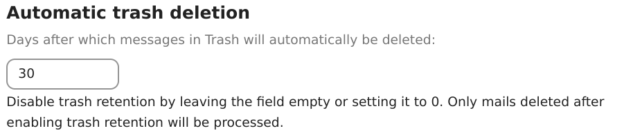
Scrierea mesajelor
Dă clic pe butonul Mesaj nou
Începe să scrii mesajul
Minimizarea ferestrei editorului
Added in version 3.2: Nextcloud 26 sau mai nou
Fereastra editorului poate fi minimizată în timp ce scrii un mesaj nou, editezi o ciornă existentă sau un mesaj din căsuța de ieșire. Dă clic pe butonul Minimizează din fereastră sau oriunde în afara ei.
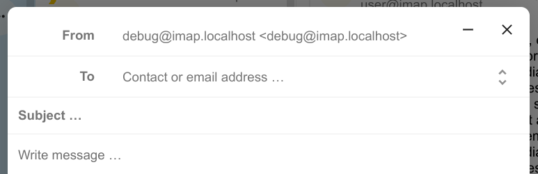
Poți relua mesajul minimizat dând clic oriunde pe indicatorul editorului minimizat.
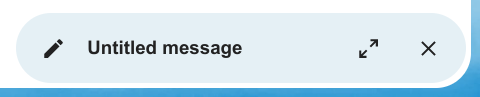
Apasă butonul Închide din fereastră sau de pe indicatorul editorului minimizat pentru a opri editarea unui mesaj. O ciornă va fi salvată automat în dosarul de ciorne.
Informații despre destinatari în editor
Added in version 4.2: Nextcloud 30 sau mai nou
Când adaugi primul destinatar sau contact în câmpul „Către”, în dreapta apare un panou cu detaliile de profil salvate ale acelui contact. Când adaugi un al doilea contact, lista se restrânge și poți selecta și extinde orice contact adăugat pentru a-i vedea detaliile. Dacă preferi să te concentrezi doar pe scris, poți ascunde panoul din dreapta cu pictograma Extinde din bara de instrumente a editorului. Pentru a afișa din nou panoul, dă clic pe pictograma Minimizează din aceeași bară.
Menționarea contactelor
Added in version 4.2: Nextcloud 30 sau mai nou
Poți menționa contacte în mesaj tastând @ și apoi selectând contactul din listă. Astfel, contactul va fi adăugat automat ca destinatar.
Notă
Vor fi sugerate doar contactele cu o adresă de e-mail validă.
Blocuri de text
Added in version 5.2: Nextcloud 30 sau mai nou
Blocurile de text sunt fragmente de text predefinite pe care le poți insera în e-mail. Pot fi create și gestionate în setările Mail. Le poți insera în editor tastând ! și apoi selectând blocul din listă sau din acțiunile editorului. Blocurile de text pot fi partajate cu utilizatori și grupuri de utilizatori.
Căsuța de ieșire
După ce un mesaj a fost scris și s-a dat clic pe butonul „Trimite”, mesajul este adăugat în Căsuța de ieșire, care apare în partea de jos a barei laterale stângi.
Poți seta și o dată și o oră viitoare pentru trimitere (vezi Mesaje programate): mesajul va fi păstrat în căsuța de ieșire până la data și ora alese, apoi va fi trimis automat.
Căsuța de ieșire este vizibilă doar când există un mesaj care așteaptă să fie procesat.
Poți redeschide editorul pentru un mesaj din căsuța de ieșire oricând înainte de pornirea trimiterii.
Notă
Când apare o eroare la trimitere, sunt posibile trei mesaje de eroare:
- Nu s-a putut copia în dosarul „Trimise”
Mesajul a fost trimis, dar nu a putut fi copiat în dosarul „Trimise”. Căsuța de ieșire va gestiona această eroare și va reîncerca copierea.
- Eroare a serverului de e-mail
Trimiterea a eșuat, dar poate fi reîncercată (de exemplu, serverul SMTP nu a putut fi contactat). Căsuța de ieșire va reîncerca trimiterea mesajului.
- Mesajul nu a putut fi trimis
Este posibil ca trimiterea să fi eșuat sau nu. Serverul de e-mail nu poate indica starea mesajului. Deoarece aplicația Mail nu poate determina starea mesajului (trimis sau netrimis), acesta va rămâne în căsuța de ieșire, iar utilizatorul contului trebuie să decidă ce face.
Acțiuni pentru dosare
Adăugarea unui dosar
Deschide meniul de acțiuni al unui cont
Dă clic pe Adaugă un dosar
Adăugarea unui subdosar
Deschide meniul de acțiuni al unui dosar
Dă clic pe Adaugă un subdosar
Acțiuni pentru mesajele din listă
Crearea unui eveniment
Creează un eveniment pentru un anumit mesaj sau o anumită conversație direct din aplicația Mail
Deschide meniul de acțiuni al unui mesaj din listă
Dă clic pe Mai multe acțiuni
Dă clic pe Creează un eveniment
Notă
Dacă administratorul a activat această funcție, titlul și agenda evenimentului sunt create automat.
Crearea unei sarcini
Added in version 3.2: Nextcloud 26 sau mai nou
Creează o sarcină pentru un anumit mesaj sau o anumită conversație direct din aplicația Mail
Deschide meniul de acțiuni al unui mesaj din listă
Dă clic pe Mai multe acțiuni
Dă clic pe Creează o sarcină
Notă
Sarcinile sunt stocate în calendarele compatibile. Dacă nu există niciun calendar compatibil, poți crea unul nou cu aplicația Calendar.
Rezumat AI
Added in version 4.2: Nextcloud 30 sau mai nou
Când parcurgi un dosar, vei vedea ca previzualizare un scurt rezumat al e-mailurilor, generat de AI.
Notă
Reține că funcția trebuie activată de administrator
Acțiuni rapide
Added in version 5.5: Nextcloud 30 sau mai nou
Îți permit să grupezi pașii pe care i-ai efectua în mod normal asupra mesajelor, precum etichetarea, mutarea, marcarea ca citit etc., în acțiuni rapide care pot fi executate cu un singur clic. Acțiunile rapide sunt specifice unui cont de e-mail și pot fi create și gestionate în setările Mail, la „Acțiuni rapide”, sau direct din meniul de acțiuni al unui mesaj.
Notă
Unii pași, precum Marchează ca spam, Mută conversația și Șterge conversația, se exclud reciproc și nu pot face parte din aceeași acțiune rapidă; de asemenea, nu pot fi reordonați și sunt executați întotdeauna ultimii.
Notă
Reține că acțiunile rapide executate asupra unui mesaj se aplică tuturor mesajelor din conversație.
Acțiuni pentru mesaje
Dezabonarea de la o listă de distribuție
Added in version 3.1: Nextcloud 26 sau mai nou
Unele liste de distribuție și buletine informative permit dezabonarea ușoară. Dacă aplicația Mail detectează mesaje de la un astfel de expeditor, va afișa un buton Dezabonează-te lângă informațiile despre expeditor. Dă clic și confirmă pentru a te dezabona de la listă.
Amânare
Added in version 3.4: Nextcloud 26 sau mai nou
Amânarea unui mesaj sau a unei conversații îl mută într-un dosar dedicat până la data aleasă, apoi este mutat înapoi în dosarul original.
Deschide meniul de acțiuni al unui mesaj sau al unei conversații
Dă clic pe Amână
Alege pentru cât timp să fie amânat mesajul sau conversația
Răspunsuri inteligente
Added in version 3.6: Nextcloud 26 sau mai nou
Când deschizi un mesaj, aplicația Mail îți propune răspunsuri generate de AI. Dacă dai clic pe un răspuns sugerat, editorul se deschide cu răspunsul deja completat.
Notă
Reține că funcția trebuie activată de administrator
Notă
Limbile acceptate depind de modelul lingvistic mare folosit
Traducerea mesajelor
Added in version 4.2: Nextcloud 30 sau mai nou
Poți traduce mesajele în limbile configurate, la fel ca în Talk.
Notă
Reține că funcțiile de traducere trebuie activate pe server
Notă
Începând cu versiunea 5.3, dacă administratorul a activat un LLM, vor fi sugerate traduceri
Rezumatul conversației
Aplicația Mail poate rezuma conversațiile care conțin 3 sau mai multe mesaje.
Added in version 3.4: Nextcloud 26 sau mai nou
Notă
Reține că funcția trebuie activată de administrator
Notă
Reține că această funcție merge bine doar cu integration_openai. LLM-urile locale răspund prea greu, iar cererea de rezumat probabil va expira, creând totuși o încărcare semnificativă a sistemului.
Filtrare și răspuns automat
Aplicația Mail are un editor de scripturi Sieve, o interfață pentru configurarea răspunsurilor automate și o interfață pentru configurarea filtrelor. Sieve trebuie activat în setările contului.
Răspunsuri automate
Added in version 3.5: Nextcloud 26 sau mai nou
Răspunsul automat este dezactivat implicit. Poate fi setat manual sau poate urma setările sistemului. Dacă urmează setările sistemului, mesajul lung de absență introdus în secțiunea Absență din setări este aplicat automat.
Filtre
Added in version 4.1: Nextcloud 30 sau mai nou
Mail 4.1 include un editor simplu pentru configurarea regulilor de filtrare.
Notă
Importul filtrelor existente nu este acceptat. Totuși, toate filtrele existente vor rămâne active și neschimbate. Din precauție, îți recomandăm să faci o copie de rezervă a scriptului actual din editorul de scripturi Sieve.
Cum adaugi un filtru nou
Deschide setările contului.
Verifică dacă Sieve este activat pentru contul tău (vezi setările serverului Sieve).
Dă clic pe Filtre.
Selectează Filtru nou pentru a crea o regulă nouă.
Cum ștergi un filtru
Deschide setările contului.
Asigură-te că Sieve este activat pentru contul tău (vezi setările serverului Sieve).
Dă clic pe Filtre.
Ține cursorul deasupra filtrului pe care vrei să-l ștergi, apoi dă clic pe pictograma coș de gunoi.
Condiții
Condițiile se aplică e-mailurilor primite pe serverul de e-mail și vizează câmpuri precum Subiect, Expeditor și Destinatar. Pentru a defini condiții pentru aceste câmpuri, poți folosi următorii operatori:
este exact: potrivire exactă. Câmpul trebuie să fie identic cu valoarea dată.
conține: potrivire parțială. Câmpul se potrivește dacă valoarea dată se află în el. De exemplu, valoarea „port” s-ar potrivi cu câmpul „raport”.
se potrivește cu: potrivire după un model cu metacaractere. Simbolul „*” reprezintă orice număr de caractere (inclusiv niciunul), iar „?” reprezintă exact un caracter. De exemplu, „raport” s-ar potrivi cu „Un raport de afaceri 2024”.
Acțiuni
Acțiunile sunt declanșate când condițiile specificate sunt îndeplinite. Sunt disponibile următoarele acțiuni:
fileinto: mută mesajul într-un dosar specificat.
addflag: adaugă un marcaj mesajului.
stop: oprește execuția scriptului de filtrare. După această acțiune nu mai sunt procesate alte filtre.
Crearea unui filtru dintr-un mesaj
Added in version 5.2: Nextcloud 30 sau mai nou
Pentru a crea un filtru dintr-un anumit mesaj, deschide mesajul, apoi deschide meniul cu trei puncte. Apoi dă clic pe „Mai multe acțiuni” și pe „Creează un filtru de e-mail”.
În fereastră, selectează condițiile pentru potrivirea mesajelor primite și continuă dând clic pe „Creează un filtru de e-mail”.
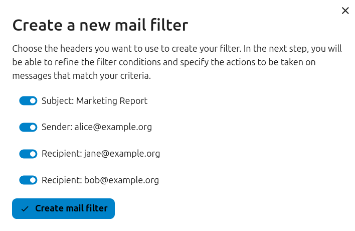
Mementouri de urmărire
Added in version 4.0: Nextcloud 30 sau mai nou
Aplicația Mail îți amintește automat când un e-mail trimis nu a primit răspuns. Fiecare e-mail trimis este analizat de AI pentru a verifica dacă se așteaptă un răspuns. După patru zile, toate e-mailurile relevante vor fi afișate în căsuța de intrare prioritară.
Când dai clic pe un astfel de e-mail, apare un buton pentru a le scrie rapid din nou tuturor destinatarilor. Poți și dezactiva mementourile de urmărire pentru un e-mail trimis.
Notă
Reține că funcția trebuie activată de administrator.
Securitate
Detectarea phishingului
Added in version 4.0: Nextcloud 30 sau mai nou
Aplicația Mail verifică posibilele tentative de phishing și afișează un avertisment utilizatorului.
Verificările sunt următoarele:
Adresa expeditorului salvată în agendă nu este aceeași cu cea din contul de e-mail
Expeditorul folosește o adresă de e-mail personalizată care nu se potrivește cu adresa „De la”
Data trimiterii este în viitor
Linkurile din textul mesajului nu duc la adresa afișată
Adresa de răspuns (reply-to) nu este aceeași cu adresa expeditorului
Notă
Reține că avertismentul nu înseamnă că mesajul este o tentativă de phishing. Înseamnă doar că aplicația Mail a detectat o posibilă tentativă de phishing.
Adrese interne
Added in version 4.0: Nextcloud 30 sau mai nou
Aplicația Mail permite adăugarea de adrese și domenii interne și avertizează utilizatorul, la trimiterea și la primirea unui mesaj, dacă adresa nu se află în listă.
Pentru a adăuga o adresă internă:
Deschide setările Mail
Mergi la secțiunea Confidențialitate și securitate
Activează adresele interne bifând caseta
Dă clic pe butonul Adaugă o adresă internă
Introdu adresa sau domeniul și dă clic pe Adaugă
Integrarea cu Tabloul de bord
Added in version 1.8: Nextcloud 20 sau mai nou
Aplicația Mail oferă două widgeturi pentru Tabloul de bord Nextcloud:
Mesaje necitite: afișează e-mailurile necitite.
Mesaje importante: afișează e-mailurile marcate ca importante.
Aceste widgeturi folosesc e-mailurile din conturile de e-mail configurate pentru contul tău.
Integrarea cu Calendar
Aplicația Mail se integrează cu aplicația Calendar ca să te ajute să gestionezi invitațiile la întâlniri și să-ți ții calendarul la zi.
Invitații la întâlniri
Când primești un mesaj cu o invitație la o întâlnire, aplicația Mail detectează automat fișierul de calendar atașat și afișează o secțiune de acțiuni care te ajută să răspunzi.
Poți:
să accepți invitația
să refuzi invitația
să accepți provizoriu invitația
Răspunsul este trimis direct din aplicația Mail, iar evenimentul este adăugat corespunzător în calendarul principal.
Poți adăuga și manual o invitație la o întâlnire într-un anumit calendar:
Deschide mesajul cu invitația la întâlnire
Derulează până la secțiunea de atașamente, la sfârșitul mesajului
Selectează fișierul de calendar (de obicei cu extensia .ics), apoi dă clic pe meniul cu trei puncte.
Dă clic pe „Importă în calendar” și alege calendarul dorit.
Automatizarea invitațiilor la întâlniri
Când organizatorul unei întâlniri trimite actualizări pentru un eveniment existent (de exemplu, schimbarea orei sau a locului), aplicația Mail le procesează automat și actualizează evenimentul corespunzător din calendar.
Added in version 5.7: Nextcloud 32 sau mai nou
Poți configura Mail să adauge automat în calendar toate invitațiile noi la întâlniri, fără acceptare manuală. Invitațiile vor fi adăugate în calendar ca provizorii.
Pentru a activa această funcție:
Deschide setările unui anumit cont de e-mail
Mergi la secțiunea Setări calendar
Activează Creează automat programări provizorii în calendar
Notă
Cu această setare activată, invitațiile vor apărea în continuare în lista de mesaje, dar vor fi adăugate automat în calendar.
Comenzi rapide de la tastatură
Aplicația Mail are mai multe comenzi rapide de la tastatură care îți accelerează lucrul.
Lista completă a comenzilor rapide acceptate se află în setările Mail din instanța ta.